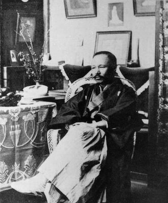

Thông tin chung

- Sinh ngày 17 tháng 2 năm 1862 tại Iwami (nay là tỉnh Shimane)
- Thể loại: tiểu thuyết, truyện ngắn, thơ
- Là một trong những cây bút đã hiện đại hóa nền văn học Nhật Bản
- Là người đầu tiên thành công chuyển ngữ thơ phương Tây sang tiếng Nhật
- Bác sĩ quân y của lục quân, làm đến chức Tổng cục trưởng
- Đề tài chủ đạo:
- - Tính dục và chủ nghĩa cá nhân
- - Tự do ngôn luận
- - Lịch sử, tiểu sử dựa trên lịch sử
- Qua đời ngày 8 tháng 7 năm 1922 vì bị suy thận và lao phổi